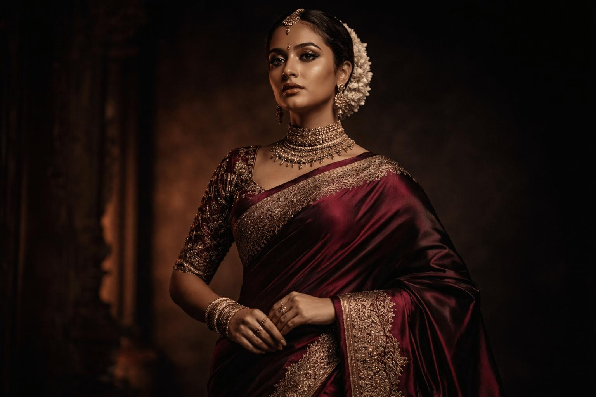

01 / 03
Discover
01 / 03
Discover
Timeless classics
Thoughtfully made Meant to be treasured
The art of Indian silk
Discover the beauty of timeless silk, where heritage, artistry and every delicate thread come together.
Crafted with intention. Worn with meaning.
Scroll to discoverA thoughtful selection of timeless textiles, intricate craftsmanship and colours inspired by the beauty of tradition.
The story behind the weave
01 / 03
Discover
Timeless classics
 02 / 03
Discover
02 / 03
Discover
Modern expression

03 / 03 DiscoverMoments that matter
Explore the texture, colour and quiet character of silk.

Texture that tells a story.
SELECT A DETAIL
Every detail deserves a closer look.

A legacy in every thread
Some things are made to be more than beautiful. They are made to carry meaning.
Silk has always held a special place in the stories we share, the traditions we preserve and the moments we choose to remember.
At SILK WEAVER, every detail is an invitation to appreciate the artistry behind the fabric — from the character of its texture to the elegance of its final drape.
Details that feel considered, balanced and enduring.
An appreciation for the skill behind every weave.
Pieces chosen for moments worth holding on to.
Behind every beautiful textile lies a journey of materials, skill and considered detail. Explore the stages that can bring a piece of silk to life.
 01 — Material & texture
01 — Material & texture
A considered beginning
The character of a textile begins with its material. Texture, colour and the qualities of the yarn all contribute to the fabric's final expression.
Material selection 02 — Skill & precision
02 — Skill & precision
Skill in every movement
Repetition, precision and an understanding of the material help transform individual threads into a considered textile design.
Technique & detail 03 — Form & finish
03 — Form & finish
The final expression
Finishing brings the design together. The final texture, drape and details shape how the textile looks, feels and is experienced.
Finishing & presentationIn a world that moves faster,
Every meaningful piece carries a memory. Here are a few words inspired by the experience of silk.
The beauty is in the details — the texture, the colour, and the feeling of wearing something truly special.
A collection of personal impressions
A few helpful answers to make your SILK WEAVER experience a little simpler.
THE DETAILS MATTER
Thoughtful choices begin with the right information. If something else is on your mind, we are happy to help.
Ask us a questionExplore our silk collections and discover the colours, textures, and details that make each piece distinctive. Contact us to learn about the products currently available.
Care requirements depend on the fabric, dye, and finish. Always check the garment label or product-specific care instructions before washing, ironing, or storing silk.
Visit our contact section and share the product or collection you are interested in. Our team can then provide details about availability and the next steps.
You can use our contact form to describe your business, wholesale, or collaboration requirements. Availability and terms can be discussed directly with the team.
Head to our contact section and send us your enquiry. Please use the company's confirmed contact details when you are ready to publish the website.
A little beauty, delivered occasionally.
Enter the world of silk through stories of craftsmanship, timeless style, thoughtful details and the beauty of things made to last.
Discover the details that make silk extraordinary — the fluid drape, the richness of its texture, and the character woven into every design.
Explore collections
A STUDY IN TEXTURE Where tradition meets a modern sensibility.
Enquire about this edit 01
01
 02
02
A little more about what you love
Have a question, an idea, or a collection in mind? We would love to hear from you. Tell us what you're looking for, and let's start a conversation.
Tell us a little about what you have in mind.
Thoughtfully made. Meaningfully remembered.